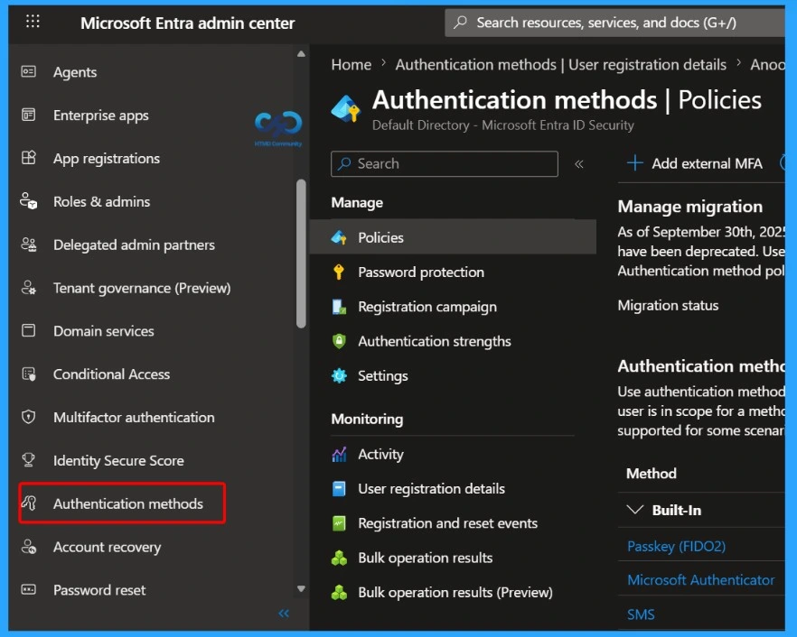
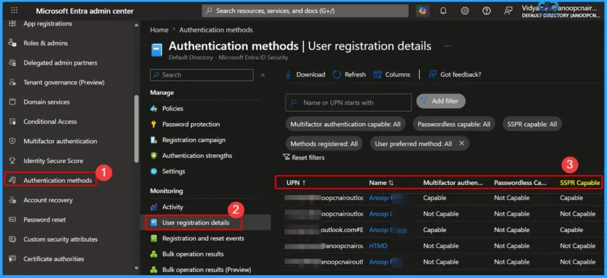

Key Takeaway
- Registered Authentication Methods Become Mandatory
- Registration Campaign Begins on August 6, 2026
- Unregistered Users May Be Unable to Reset Passwords
- Organizations Should Verify Authentication Method Coverage
- The Change Improves Identity Security
Entra ID SSPR Improves Security with Registered Authentication Methods! Starting September 7, 2026, Microsoft Entra ID Self-Service Password Reset (SSPR) will require users to verify their identity using explicitly registered authentication methods. Directory-sourced contact information, such as mobile phone numbers, business phone numbers, and alternate email addresses, will no longer be accepted for password reset verification unless those details have been registered as authentication methods. This change is part of Microsoft’s Secure Future Initiative (SFI) to improve the security and reliability of password resets.
Table of Content
Does the Change Alter how Existing Customer Data is Processed, Stored, or Accessed?
Yes. Directory attributes such as phone numbers and email addresses will no longer be used for SSPR verification unless they are explicitly registered as authentication methods.
Does the Change Alter Admin Monitoring or Reporting?
Yes. Administrators will be able to monitor authentication method registration coverage using updated reporting in the Microsoft Entra admin center.
Does the Change include Admin Controls?
Yes. Administrators will continue to have control over SSPR policies and can manage authentication method registration requirements within the tenant.
MS Entra ID SSPR Improves Security with Registered Authentication Methods | Impact on Unregistered Users Starting September 2026
To prepare for this change, Microsoft will begin an SSPR registration campaign on August 6, 2026, prompting users to register the required authentication methods. Organizations should review authentication method registration coverage, ensure all users and administrators have at least one supported authentication method registered, and communicate the upcoming change. Users who have not registered a valid authentication method by September 7, 2026, may be unable to perform self-service password resets and will need assistance from their IT administrator or helpdesk.
| Field | Details |
|---|---|
| Message ID | MC1325414 |
| Service | Microsoft Entra |
| User Impact | SSPR will require explicitly registered authentication methods for password reset verification |
| Admin Impact | Admins must ensure all users have registered authentication methods and update SSPR readiness |

Action Required and Recommendations for Microsoft Entra ID SSPR Update
Action is required before September 7, 2026, to ensure users can continue using Self-Service Password Reset (SSPR) without disruption. Organizations must review their current authentication method registration coverage and prepare users for the upcoming enforcement change.
- Review authentication method registration coverage in Microsoft Entra admin center → Authentication methods → User registration details
- Ensure all users, including administrators, have at least one registered authentication method that meets the SSPR policy requirements
- Enable or allow the SSPR registration campaign to automatically prompt users to register authentication methods
- Plan fallback and support processes, including:
- Helpdesk-assisted authentication method registration
- Alternative onboarding workflows for users who cannot self-register
- Communicate the change clearly to:
- IT administrators and helpdesk teams
- End users, encouraging registration through My Security Info

Need Further Assistance or Have Technical Questions?
Join the LinkedIn Page and Telegram group to get the latest step-by-step guides and news updates. Join our Meetup Page to participate in User group meetings. Also, join the WhatsApp Community and the Whatsapp channel to get the latest news on Microsoft Technologies. We are there on Reddit as well.
Author
Anoop C Nair is a Workplace Technology solution architect with 25+ years of experience. Microsoft Certified Trainer. Microsoft MVP from 2015 onwards for consecutive 11+ years! He is a blogger, Speaker, and Founder of HTMD Community and HTMD Conference. His main focus is on Device Management technologies like Intune, Windows, and Cloud PC. He writes about technologies like Intune, SCCM, Windows, Cloud PC, Entra, and Microsoft Security.